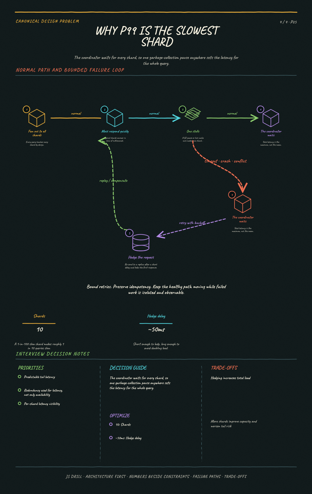

https://frosty110.github.io/js-drill/assets/system-design/infographics/design-problems/p25/fanout-tail-latency.pngServe full-text queries over billions of documents in under a second. The signature challenge is that the inverted index inverts the obvious data layout — you store term to documents rather than document to terms — and everything else follows from making that index shardable, rankable and refreshable.
All questions, model answers and diagrams for Design a Search Engine →